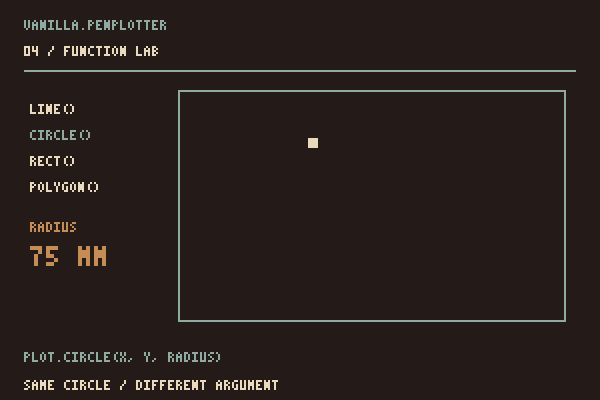
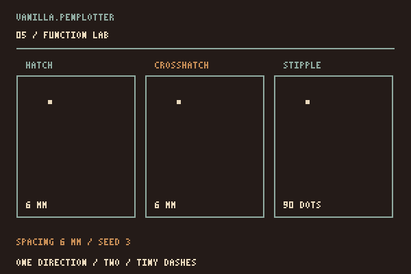
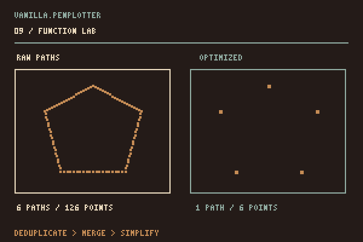
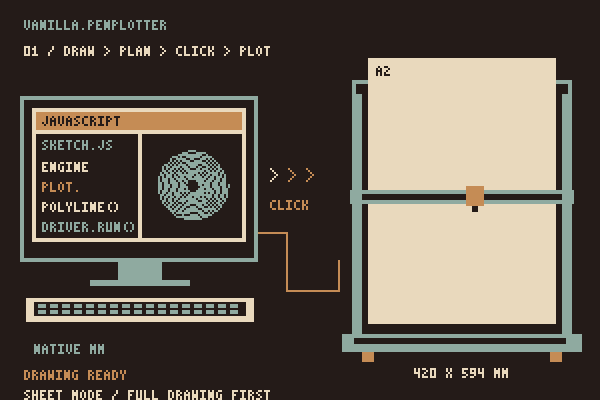

Guide
Seven short steps and a page of starters. The first four give you a planned job; the seventh sends it to the machine. You only need the modules underneath when your sketch asks for them.
1. Create geometry
import { PlotterEngine } from "../vanilla.penplotter.js";
const plot = new PlotterEngine({
units: "mm",
page: { width: 210, height: 297, margin: 12 }
});
plot.line(20, 20, 190, 20);
plot.circle(105, 145, 52);The active layer starts as default. Geometry is stored directly; no canvas or SVG has to exist first.
Paper, drawing and bed have separate sizes. A4 is 210 × 297 mm in portrait, or 297 × 210 mm in landscape. The drawing occupies only the area covered by its strokes. The bed is the machine’s working area; “A2” in a model name does not set your drawing’s size.
PlotterEngine.paperSize(format, orientation, units) exposes the same helper as the named paperSize() export. The p5 adapter uses it to fit a canvas with createPlot({ paper: "A2", margin: 12 }). The core's own paper selection preserves the original stroke size.
import { PlotterEngine, paperSize } from "../vanilla.penplotter.js";
const plot = new PlotterEngine({
units: "mm",
page: { ...paperSize("A4", "landscape"), margin: 12 }
});paperSize() supports A0–A6. It sets the sheet dimensions without scaling the geometry. A3 is 297 × 420 mm; A2 is 420 × 594 mm. On the 594 × 432 mm HSE/A2 bed, A2 fits with its 594 mm edge along X, at X = 0 and Y between 0 and 12 mm.
In every example’s pen panel, choose the drawing’s original page or an A format. A formats start in portrait. Turn by 90° or 270° for landscape, then use Centre paper on the bed or enter X/Y from home. Turning rotates the drawing with its sheet; choosing paper never scales the strokes. The panel blocks plotting if the sheet extends beyond the bed or the drawing extends beyond the sheet. A2 landscape centres at X = 0, Y = 6 mm. Export links keep the drawing’s original page and coordinates, before bed placement.

52 to 26. Here the numbers are millimetres; circle() takes a radius.2. Add pens and layers
plot.tool({ id: "blue", name: "Blue fineliner", color: "#234f84", width: 0.3 });
plot.layer("waves", { toolId: "blue" });
plot.polyline(points);
plot.tool({ id: "red", name: "Red fineliner", color: "#d94b39", width: 0.3 });
plot.layer("accents", { toolId: "red" });
plot.circle(105, 145, 24);
visible property to false and rebuilding the plan. Its paths stay in the document, but leave the job. The driver waits for a manual pen change.3. Generate fills
const boundary = [
{ x: 30, y: 40 },
{ x: 180, y: 40 },
{ x: 165, y: 230 },
{ x: 45, y: 245 }
];
plot.hatch(boundary, {
spacing: 2.4,
angle: Math.PI / 4
});
plot.stipple(boundary, {
count: 240,
minDistance: 1.5,
seed: 42
});
4. Optimize and plan
plot.optimize({
duplicateTolerance: 0.01,
mergeTolerance: 0.05,
simplifyTolerance: 0.03
});
const plan = plot.plan({
strategy: "nearest",
drawSpeed: 40, // mm/s; the defaults are the iDraw's own
travelSpeed: 40,
acceleration: 800, // mm/s², the estimate ramps like the machine
travelAcceleration: 300,
liftDelay: 0.6, // s per stroke: pen down, and up again
toolChangeDelay: 15
});
console.log(plan.stats);Tolerances, coordinates and distance statistics use document units. Planner speeds use mm/s; G-code feed rates use mm/min. HPGL and G-code exports convert coordinates to physical units (96 CSS pixels = 1 inch). SVG retains the document units.
After editing the document, export, statistics and preview rebuild stale plans automatically, retaining the previous optimization and planning settings. This also covers edits to returned paths, layers and tools. Document data must remain JSON-serializable.


5. Preview, and files for other machines
plot.drawRoute(canvas.getContext("2d"), {
showTravel: true
});
const svg = plot.exportSVG();
const hpgl = plot.exportHPGL({ unitsPerMm: 40 });
const gcode = plot.exportGCode({
penUp: "M5",
penDown: "M3 S1000"
});
6. Use the modules directly
Import from src/geometry, src/optimizer, src/planner or src/renderer. The root facade does not own a hidden representation: every stage accepts and returns the documented snapshots.
7. To the pen
This is where it was all going. One machine profile has a tested driver so far: the iDraw HSE / A2, an AxiDraw-style CoreXY plotter with an EBB board. The plan goes straight to it; nothing is written to disk on the way.
import { EbbDriver, createWebSerialTransport } from "./src/driver/ebb.js";
const transport = createWebSerialTransport();
await transport.open(); // from a click: the browser shows its port list
const driver = new EbbDriver({ transport, profile: "idraw-hse-a2" });
await driver.run(plot.plan(), { confirmed: true });Use millimetres, centimetres or inches. Park the carriage in the home corner by hand first: the machine has no homing, so that spot is 0,0 of the plan. Every point is checked against the 594 × 432 mm travel before the first byte is sent, and driver.abort() or an error requests the stop sequence: motion halted, pen up, motors off. A working connection is needed to deliver those commands. compileEbbPlan(plan) with createLogTransport() is the dry run.
Web Serial needs Chrome or Edge on localhost or https. Motion is planned with acceleration; the plan's drawSpeed and travelSpeed are what the machine gets, and run(plan, { drawSpeed, travelSpeed, acceleration, travelAcceleration, junctionDeviation }) overrides any of them. The example panel can resume after completed strokes of the same drawing, after manual parking at home. There is no mid-stroke pause or resume. Exports for other machines need suitable software and configuration.
A complete drawing is prepared before plotting. strategy: "drawn" can preserve its order. Live drawing, where new strokes arrive while the pen runs, is proposed work and has no current API.
The HSE profile records manufacturer defaults separately from its operating settings. It retains the controller's pen calibration unless you supply penLift. For a known standard servo, height percentages are 0–100 and lift/lower rates are 1–100:
import { compileEbbPlan } from "./src/driver/ebb.js";
const compiled = compileEbbPlan(plot.plan(), {
profile: "idraw-hse-a2",
penLift: { up: 60, down: 30, raiseRate: 75, lowerRate: 50 }
});These heights are control percentages, not millimetres. Check the installed servo and pen mounting; omit penLift to keep existing calibration. The machine notes distinguish the tested HSE/A2 from likely compatible devices. Sharing EBB firmware alone does not establish mechanical compatibility.

8. Copy-paste starters
Start with the complete ES-module example below. The following fragments reuse its plot object; provide the points or SVG text they refer to. The full example pages include the preview and pen panel.
A wave on A4, as SVG
import { PlotterEngine } from "./vanilla.penplotter.js";
const plot = new PlotterEngine({ units: "mm", page: { width: 210, height: 297, margin: 15 } });
for (let row = 0; row < 20; row += 1) {
const points = [];
for (let x = 20; x <= 190; x += 0.5) {
points.push({ x, y: 40 + row * 11 + Math.sin(x * 0.08 + row * 0.5) * 4 });
}
plot.polyline(points);
}
const link = document.createElement("a");
link.href = URL.createObjectURL(new Blob([plot.exportSVG()], { type: "image/svg+xml" }));
link.download = "waves.svg";
link.click();Tone from lines
const cell = (x, y, size) => [{ x, y }, { x: x + size, y }, { x: x + size, y: y + size }, { x, y: y + size }];
for (let index = 0; index < 8; index += 1) {
plot.hatch(cell(20 + index * 22, 40, 20), { spacing: 6 - index * 0.65, angle: Math.PI / 4 });
}Two pens
plot.tool({ id: "black", color: "#171815", width: 0.3 });
plot.tool({ id: "red", color: "#c8402c", width: 0.8 });
plot.layer("outline", { toolId: "black" });
plot.circle(105, 148, 60);
plot.layer("fill", { toolId: "red" });
plot.hatch([{ x: 60, y: 120 }, { x: 150, y: 120 }, { x: 150, y: 176 }, { x: 60, y: 176 }], { spacing: 2 });
const hpgl = plot.exportHPGL({ penMap: { black: 1, red: 2 } });Supported SVG paths, planned
import { PlotterEngine, Geometry } from "./vanilla.penplotter.js";
const imported = Geometry.importSVG(await (await fetch("drawing.svg")).text(), { curveSteps: 24 });
const fitted = Geometry.transformDocument(imported, Geometry.Matrix.scale(0.25)); // 800 px → 200 mm
const plot = new PlotterEngine({ units: "mm", page: { width: 210, height: 297 } });
for (const layer of fitted.layers) plot.layer(layer.id).paths = layer.paths;
console.log(plot.stats());More directions on the Possibilities page; every example on Examples is a finished version of one of these.